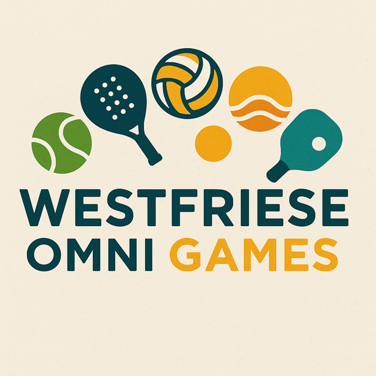

Recente evenementen
De vijfde editie van de Westfriese Omnigames vond plaats in 2025. Een dag vol sport, verbinding en plezier. Bekijk het speelschema en uitslagen via Tournify:
Ook het Beach Padel Toernooi van 2023 werd enthousiast ontvangen. Een sportieve middag met clinics, wedstrijden en een afsluitende borrel, in samenwerking met Jorge Sanchez van NH Beach Tennis.